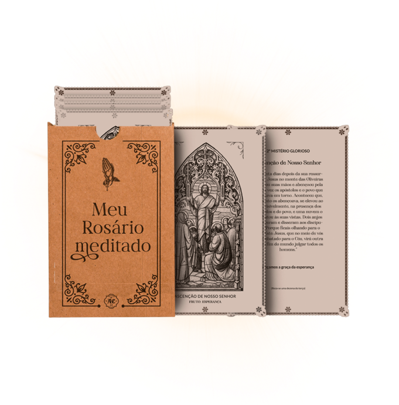

Consiga rezar o rosário mais piedosamente, com concentração e meditação, independente de onde esteja.
O Meu Rosário Meditado facilita e possibilita sua meditação ao rezar o Rosário, com imagens e textos…
QUERO REZAR O ROSÁRIO CORRETAMENTE
Compra 100% segura
